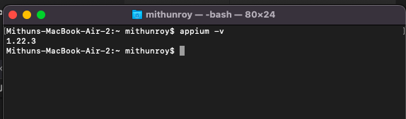
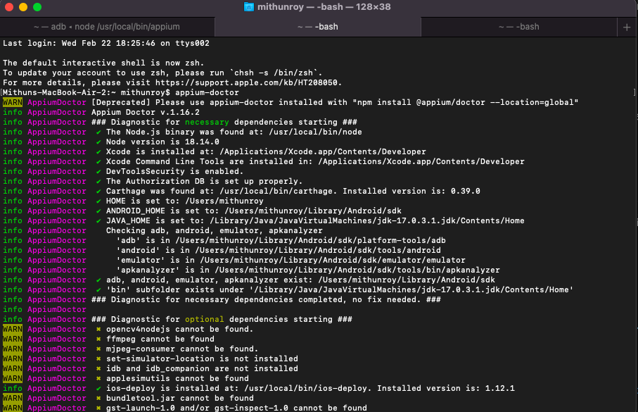

Install Python 3
1. Download and Install Python from here :https://www.python.org/downloads/
2. If you are using MAC machine then type python3 in terminal , python should
be installed already
3. If you are using Windows machine then it is
mandatory to add Python installation path to the Environment Variables. Once it is done
then open cmd and type python --version. An example of the output is:
Install Xcode for Mac Machine
If you are using a Mac machine to use Appium then we need to install Xcode to set up Appium.
Go to Apple App store and install it. For Windows machine it is not applicable.
Download and Install Android Studio
1. Download and Install Android Studio from here : https://developer.android.com/studio
2. If you are using MAC machine then follow below process to set Android Home path set.
2.1=>Open terminal and Type nano ~/.bash_profile
2.2=>Add below installation path --
2.3=>export ANDROID_HOME=/Users/
2.4=>export PATH=$PATH:$ANDROID_HOME/platform-tools
2.5=>export PATH=$PATH:$ANDROID_HOME/tools
2.6=>export PATH=$PATH:$ANDROID_HOME/tools/bin
2.7=>export PATH=$PATH:$ANDROID_HOME/emulator
Reopen terminal and check if it worked==>
source ~/.bash_profile
echo $ANDROID_HOME
Once path is set then in terminal type adb , it should return something.
3. If you are using Windows machine then ,
Go to Start -> Control Panel -> System -> Advanced(tab) ->
Environment Variables -> System Variables.
3.1 ==>Variable name: ANDROID_HOME, Variable value: the path where you installed the android SDK, in my case is, C:\Android\android-sdk.
3.2 ==> You have to add the variable to the Path variable system by adding this: ;%ANDROID_HOME%\platform-tools;%ANDROID_HOME%\tools;.
3.3==> Once path is set then in cmd type adb , it should return something.
Install Appium using Node.js
1. The first step is to verify whether Node.js is already installed in the system.
To do so, open the terminal and run the below command:
node --version
If it is already installed then it’ll return the Node version , else download it from :
https://nodejs.org/en/download/.Choose the Node installer per the underlying operating system (Mac or Windows).
2. Mac users can use the node -v and npm -v commands to verify the installation and version details. Else go to Step 1 URL and install it as per Mac version.
3. Once Node is installed then use below command to install Appium in your system. This command
is same both for Mac and Windows.
npm install -g appium
4. The above command will download and install Appium. Once done, verify the Appium installation on MAC or Windows by running the command below:
appium --version or appium -v

This will return the latest Appium version installed in your system.
Installing and Using Appium Doctor
1. Appium Doctor can be used to check whether all the prerequisites/dependencies/installations required for installing Appium are met.
2. Open cmd/terminal and run below command to install Appium doctor.
npm install -g appium-doctor
2. Once Appium doctor is installed then run below command
appium-doctor
Observe that Appium Doctor start checking if any Appium prerequisites, setup configuration or dependencies are missing before installing Appium as shown below:

Download Appium Inspector
1. Download and Install Appium Inspector from here : https://github.com/appium/appium-inspector/releases
2. If you are using MAC machine then download Appium-Inspector-mac-2023.2.1.dmg
then install it.
2. If you are using Windows machine then download Appium-Inspector-windows-2023.2.1.exe
install it.
How To use Appium Inspector?
1. Connect real device with data cable with your local Mac/Windows machine. You can
also use Emulator cloud device from Android Studio.
Make sure your device is recognized by Android SDK. To check this, open
cmd/Terminal and type adb devices. This should return
your Android device ID. If you connect Simulator then this command can display Simulator id also.
2. Download the APK file which we are going to automate in local Mac/Windows machine.
3. Open cmd / Terminal to start appium server by typing
appium
as below. This command will start Appium server.
4. Now double click to open Appium Inspector and fill below details.
Remote Host = 127.0.0.1
Remote Port = 4723
Remote Path = /wd/hub
Remote Host = 127.0.0.1
Under Desired Capabilities -
platformName = Android
appium:app = /Users/mithunroy/Downloads/com.flipkart.com.apk
5. Once all details are filled then click on Start Session to start the session.
It will launch the session as below.
6. Now click on the arrow to inspect the app object to find its id/xpath or other properties.
Install Appium Python Client
1. It is an extension library for adding WebDriver Protocol and Appium commands to the Selenium Python language binding for use with the mobile testing framework Appium.
2. Open cmd/terminal and run below command to install it.
pip install Appium-Python-Client
Download and Install Visual Studio Code
1. Go to below link and download then install Visual Studio Code.
https://code.visualstudio.com/
Visual Studio Code is available both for Mac and Windows.
Android Chrome Browser Web Automation using Appium Python
1. Create a new folder for project directory
2. Open Visual Studio Code.
3. Click on open and select the directory folder.
4. Once VS Code open with project directory then create a python file AppiumWeb.py as below.
5. Connect your Android Device with data cable and check the
device UDID should be getting identified by adb devices.
6. Now Check your Android device Chrome Browser version.
7. Download Chrome Driver maintaining same version from here :
https://chromedriver.chromium.org/downloads
8. Now open cmd/terminal and start Appium server with below command:
appium --chromedriver-executable /Users/mithunroy/Downloads/BrowserDrivers/chromedriver
appium = command to start Appium Server
--chromedriver-executable = Parameter name to pass Chrome Driver path
/Users/mithunroy/Downloads/BrowserDrivers/chromedriver = Chrome Driver location
9. Now go to Visual Studio Code , in AppiumWeb.py file and write below code
# Appium With Python# Android Web using Chrome with Appium Python
import unittest
from appium import webdriver
class TestMobileChrome(unittest.TestCase):
desired_caps = {
"deviceName": "Samsung",
"platformName": "Android",
"version" : "9.0",
"udid" : "11f2b948",
"browserName": "chrome"
}
# Launch Chrome Browser in Real Device using Chrome
def setUp(self):
global driver
driver = webdriver.Remote("http://localhost:4723/wd/hub", self.desired_caps)
driver.get("https://www.google.com")
# Validate Google Page Title
def test_googleTitle(self):
self.assertEqual(driver.title , 'Google')
print('Google Title Validation is Pass')
# Quiting the Browser
def tearDown(self):
driver.quit()
if __name__ == '__main__':
unittest.main()
import unittest = This is for using Python Unit Testing Framework
from appium import webdriver = Adding appium library
desired_caps Python dictionary to declare all mandatory capabilities to
launch Android Web using Appium.
webdriver.Remote("http://localhost:4723/wd/hub", self.desired_caps) =
To initiate Appium Web driver session using desired_caps.
self.assertEqual(driver.title , 'Google') = Python UnitTest assertion
to validate google page title.
if __name__ == '__main__': = This is main function to call Python
UnitTest.
Run the file using below commnd :
python3 AppiumWeb.py
The code should run and launch Chrome Browser in Android Mobile Device. Open Google application ,
validate its logo and close it. The Result is given below.
Android native APP [.APK] Automation using Appium Python
1. Create a new folder for project directory
2. Open Visual Studio Code.
3. Click on open and select the directory folder.
4. Once VS Code open with project directory then create a python file AppiumWeb.py as below.
5. Connect your Android Device with data cable and check the
device UDID should be getting identified by adb devices.
6. Now open cmd/terminal and start Appium server with below command:
appium
appium = command to start Appium Server
7. Now the test APK file need be downloaded / store in Mac/Windows any directory. In below
example we are using Naukri APP for an example to automate the native App.
8. Now go to Visual Studio Code , in AppiumWeb.py file and write below code
# Appium With Python
# Android Native App with Appium Python
import unittest
from appium
import webdriver
import time
from appium.webdriver.common.appiumby import AppiumBy
class TestMobileChrome(unittest.TestCase):
desired_caps = {
"deviceName": "Samsung",
"platformName": "Android",
"version" : "9.0",
"udid" : "11f2b948",
"app": "/Users/mithunroy/Downloads/naukri-com-17-1.apk"
}
# Android Native App in Real Device using Chrome
def setUp(self):
global driver
driver = webdriver.Remote("http://localhost:4723/wd/hub", self.desired_caps)
# Validate Some Element in Test APK File ...
def test_googleTitle(self):
time.sleep(5)
driver.find_element(AppiumBy.ID,'naukriApp.appModules.login:id/ssa_cancel_textview').click()
time.sleep(5)
self.assertTrue(driver.find_element(AppiumBy.ID
,'naukriApp.appModules.login:id/textViewLabel').is_displayed())
self.assertTrue(driver.find_element(AppiumBy.ID
,'naukriApp.appModules.login:id/textViewLogin').is_displayed())
self.assertTrue(driver.find_element(AppiumBy.ID
,'naukriApp.appModules.login:id/textViewNormalLogin').is_displayed())
print('Naukri App Login text with Button is Available')
# Quiting the App
def tearDown(self):
driver.quit()
if __name__ == '__main__':
unittest.main()
import unittest = This is for using Python Unit Testing Framework
from appium import webdriver = Adding appium library
desired_caps Python dictionary to declare all mandatory capabilities to
launch Android Web using Appium.
"app": "/Users/mithunroy/Downloads/naukri-com-17-1.apk" = To declare APK file path under desired_caps
webdriver.Remote("http://localhost:4723/wd/hub", self.desired_caps) =
To initiate Appium Web driver session using desired_caps.
self.assertTrue(driver.find_element(AppiumBy.ID
,'naukriApp.appModules.login:id/textViewLabel').is_displayed()) = Python UnitTest assertion
to validate element with ID.
if __name__ == '__main__': = This is main function to call Python
UnitTest.
Run the file using below commnd :
python3 AppiumWeb.py
9. The code should run and launch Naukri native APP in Android Mobile Device. Then validate the
3 Android Element with its ID.